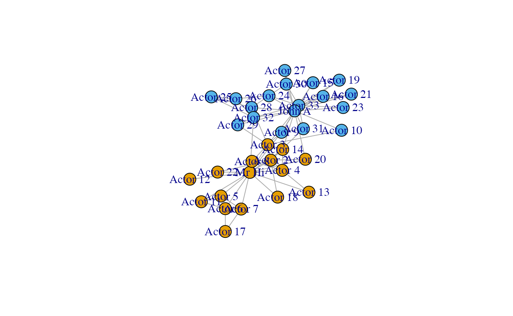
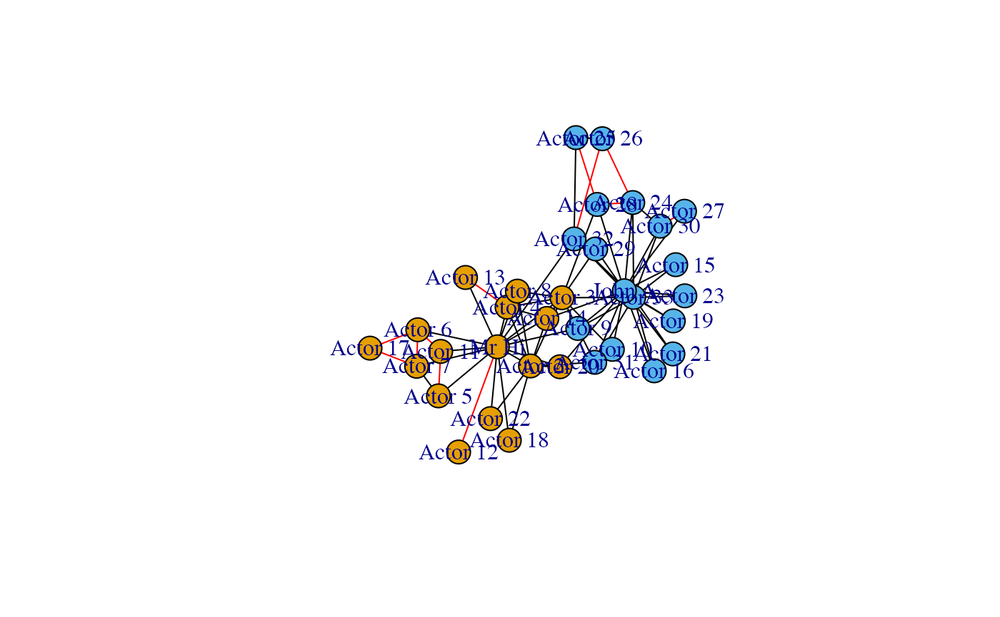
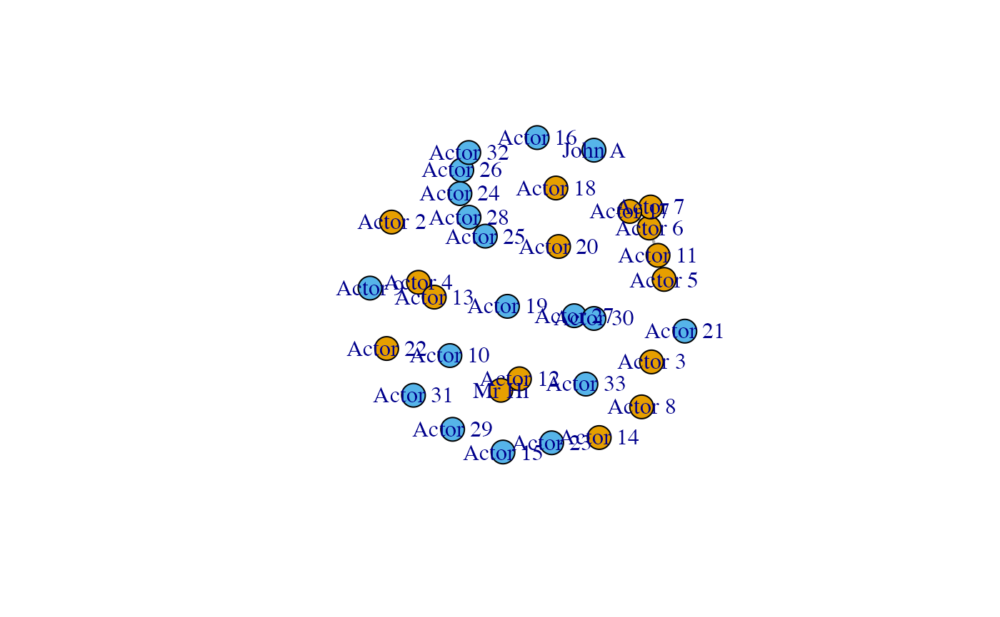
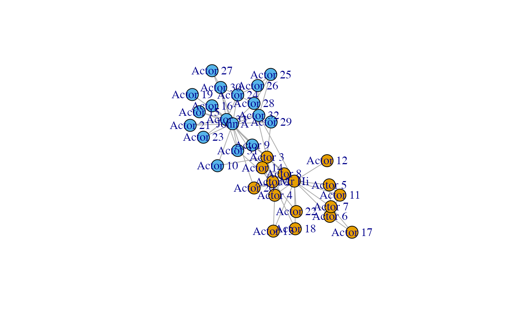
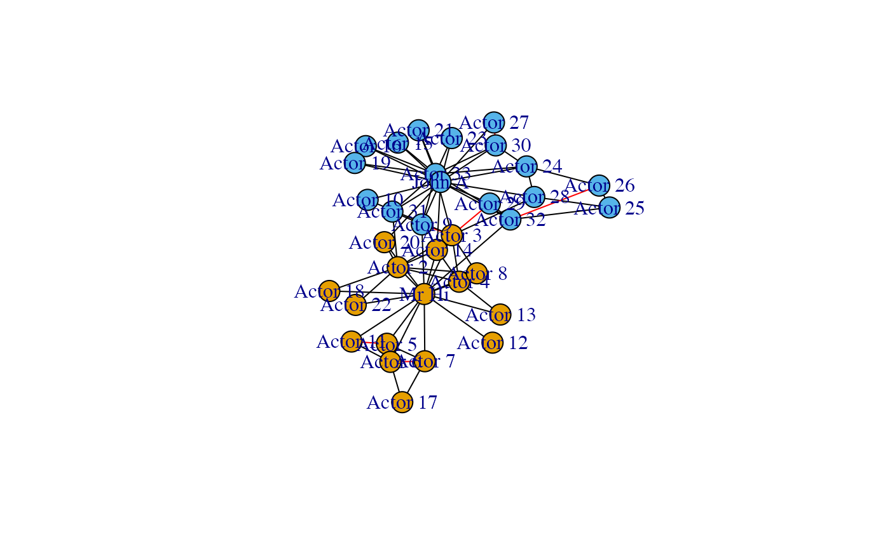
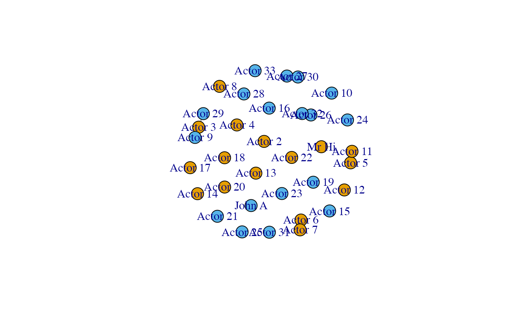

Significantlinks.RmdIn this short tutorial we exploit the ghypernet package to detect significant links. We use the Karate Club as running example.
##
## Attaching package: 'igraph'## The following objects are masked from 'package:stats':
##
## decompose, spectrum## The following object is masked from 'package:base':
##
## union
data("adj_karate")
data("vertexlabels")
karate <- graph_from_adjacency_matrix(adjmatrix = adj_karate, mode='undirected', weighted=TRUE)
V(karate)$color <- vertexlabelsFirst we estimate a soft-configuration model from the data. The second model is a block model based on the two ‘factions’ of members of the club
We use the built-in function in the ghypernet package to compute the significance of each link as described in Casiraghi et al. 2017. The function takes the adjacency matrix of the network and the model from which estimating the probability to observe as many edges as those in the graph. We can obtain a high-pass noise filtering choosing a significance level and filtering those links which have a low significance.
# obtain significance matrix
signmat <- link_significance(adj_karate, mod, under = FALSE)
# filter adjacency matrix
adjfiltered <- adj_karate
adjfiltered[signmat>(1/mod$m)] <- 0
adjfiltered[signmat<(1/mod$m) & adj_karate==0] <- 1
diag(adjfiltered) <- 0We plot the original graph first, then a graph were the non-significant links are coloured red. The final plot only shows the significant links.
Note that the configuration model is not able to predict the strong links within the groups, as those go beyond simple degree effects. The results reflect this showing the two factions separated and only the links due to homophily effect left.
adjcolor <- adj_karate
adjcolor[adj_karate>0] <- 2
adjcolor[signmat<(1/mod$m)] <- 1
diag(adjcolor) <- 0
gfiltered <- graph_from_adjacency_matrix(adjfiltered, mode = 'upper')
g <- graph_from_adjacency_matrix(adjcolor, mode = 'upper', weighted = 'color')
E(g)$color[E(g)$color==1] <- "red"
E(g)$color[E(g)$color==2] <- "black"
V(gfiltered)$color <- V(g)$color <- vertexlabels
plot(karate)
plot(g)
plot(gfiltered)
As the Karate Club consists of two factions, we can refine the model adding the block structure to it. Then we can filter out the links that are not significant according to this more complex model.
What we expect in this case is that most of the within-group links are now not significant, as they can be explained by the joint effect of configuration model and block model. Hence the links that remains after filtering are those that go beyond this joint effect. In particular, only few nodes of a group interact with the other group, i.e. the between-groups links are concentrated between few dyads. From the model instead we should expect most nodes of a group weakly interacting with the other group. Hence, we can expect that the significant links will be mainly those between groups. The results are in accordance with our intuition.
signmat <- link_significance(adj_karate, blockModel, under=FALSE)
# filter adjacency matrix
adjfiltered <- adj_karate
adjfiltered[signmat>(1/mod$m)] <- 0
adjfiltered[signmat<(1/mod$m) & adj_karate==0] <- 1
diag(adjfiltered) <- 0
adjcolor <- adj_karate
adjcolor[adj_karate>0] <- 2
adjcolor[signmat<(1/mod$m)] <- 1
diag(adjcolor) <- 0
gfiltered <- graph_from_adjacency_matrix(adjfiltered, mode = 'upper')
g <- graph_from_adjacency_matrix(adjcolor, mode = 'upper', weighted = 'color')
E(g)$color[E(g)$color==1] <- "red"
E(g)$color[E(g)$color==2] <- "black"
V(gfiltered)$color <- V(g)$color <- V(karate)$color
plot(karate)
plot(g)
plot(gfiltered)